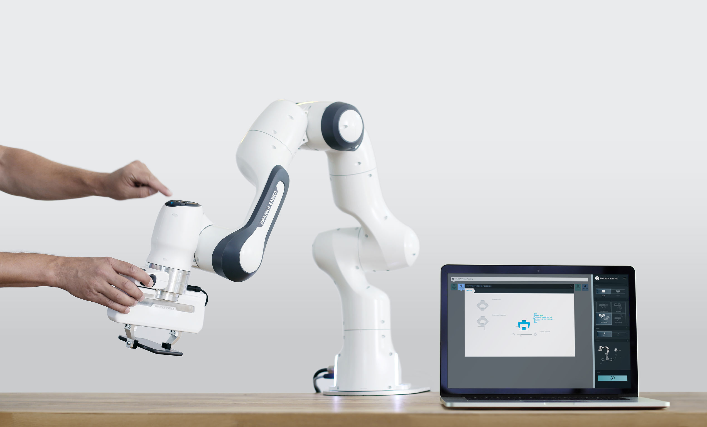
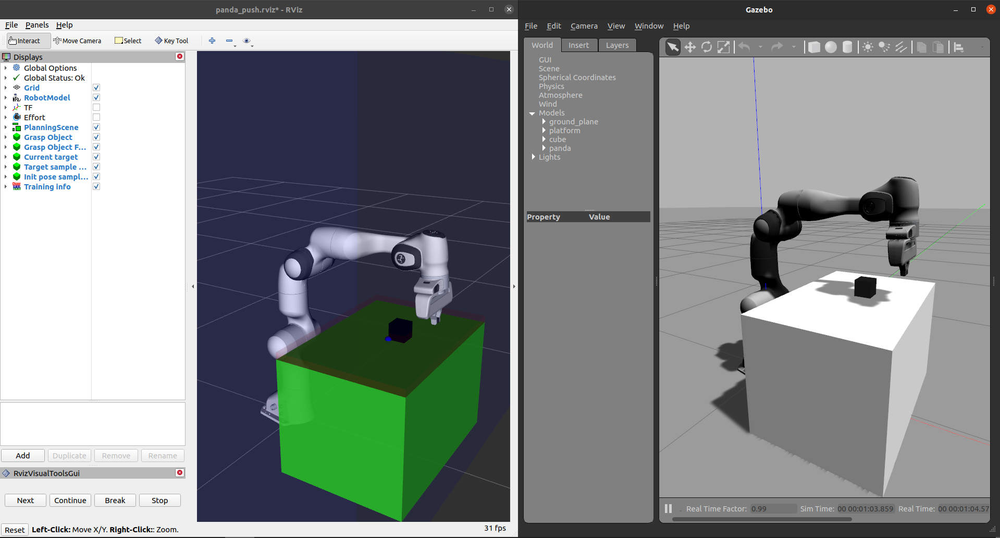

Panda environment
Introduction
The Panda robot, designed by Franka Emika, is a sophisticated 7DOF research robot. Characterized by its sensitivity, agility, and torque sensors at each joint, the Panda robot offers adjustable stiffness/compliance and advanced torque control. It is controlled through the Franka Control Interface (FCI), which can be accessed through open-source components available on GitHub. These components include the libfranka C++ library for low-level control and the franka_ros high-level ROS interface that supports both ROS Control and MoveIt! The Panda robot also has a simulated counterpart known as franka_gazebo. This simulation closely mirrors the SDK systems of the real robot, ensuring that developments in the simulation translate seamlessly to the real robot.
Attention
It’s important to note that there are minor disparities between the real and simulated Panda robot:
Masses and inertias differ between the simulated and real robot.
Simulation motion generators do not match those in the FCI.
System dependencies
The Panda environment requires the following system dependencies to be installed on the host machine:
The libfranka library (automatically installed by rosdep).
Control types
In the ros_gazebo_gym version of the Panda environment, four control types are supported: effort, position, trajectory, and
end-effector control. The end-effector control is facilitated through MoveIt.
Task environments
The panda ros_gazebo_gym package comprises task environments adapted from the fetch environments in the gymnasium package. Currently, it includes the following task environments:
PandaReach-v1: Move the Panda robot to a goal position.PandaPickAndPlace-v1: Lift and place a block at a goal.PandaPush-v1: Push a block to a goal position.PandaSlide-v1: Slide a puck to a goal position.
Note
The components responsible for creating the ros_gazebo_gym Panda environment are enclosed within the panda-gazebo ROS workspace package. This package is automatically downloaded and built by the ros_gazebo_gym package when running one of the panda task environments.
Known Issues
This document outlines the known issues you may encounter when using the Panda environment. These issues are caused by upstream bugs in the franka_ros package, which the panda_gazebo package uses to create the simulated Panda robot. We recommend checking the issues page on the panda-gazebo GitHub repository for updates.
Gravity Compensation Bug
Issue: Gravity compensation is not working properly when the robot is effort-controlled.
Reference: panda-gazebo#39
Due to an upstream bug in the franka_gazebo package, the gravity compensation feature may not function as expected.
This issue can be mitigated by switching the physics engine from ODE to DART using the physics argument in the simulation.launch file:
roslaunch panda_gazebo simulation.launch physics:=Dart
Simulation Crashes with DART Physics
Issue: The simulation sometimes crashes when the DART physics engine is used and the gripper is controlled.
Reference: panda-gazebo#196
Users may experience occasional simulation crashes when using the DART physics engine and controlling the gripper. We recommend switching to the ODE physics engine when using the gripper.
Gripper Problems when Vertical
Issue: The gripper is not working properly when being vertical to the ground.
Reference: panda-gazebo#33
Due to incorrectly tuned PID gains in the franka_gazebo package, the gripper may not function properly when it is oriented vertically to the ground.